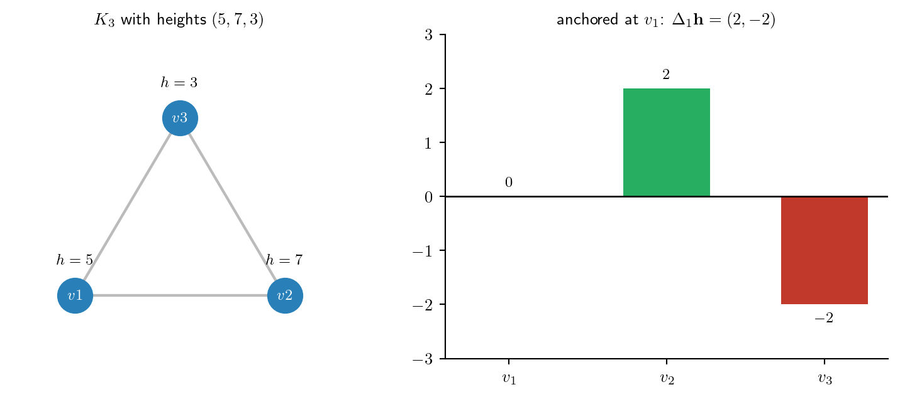
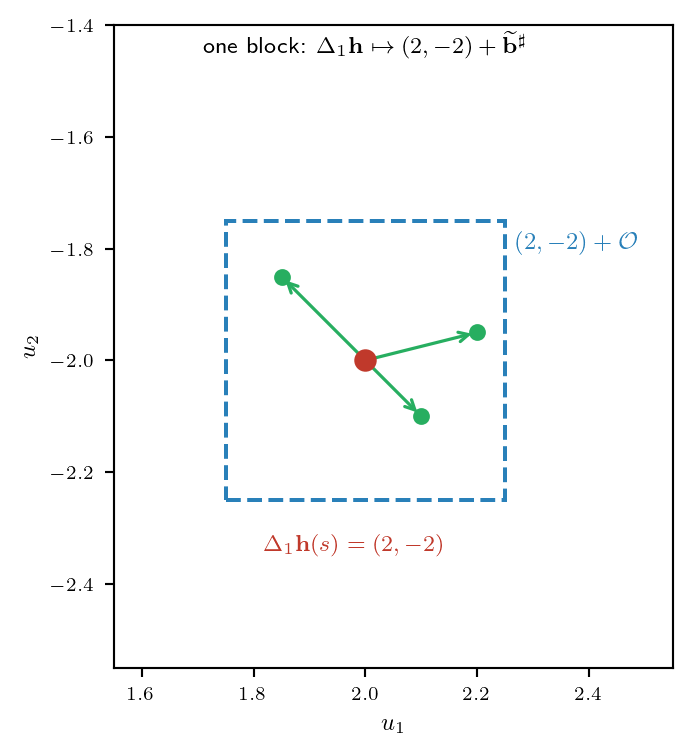
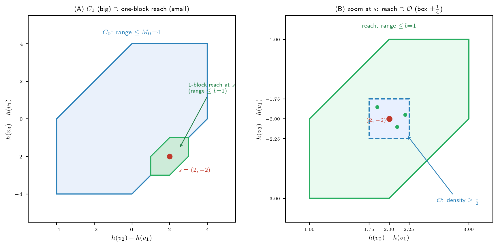
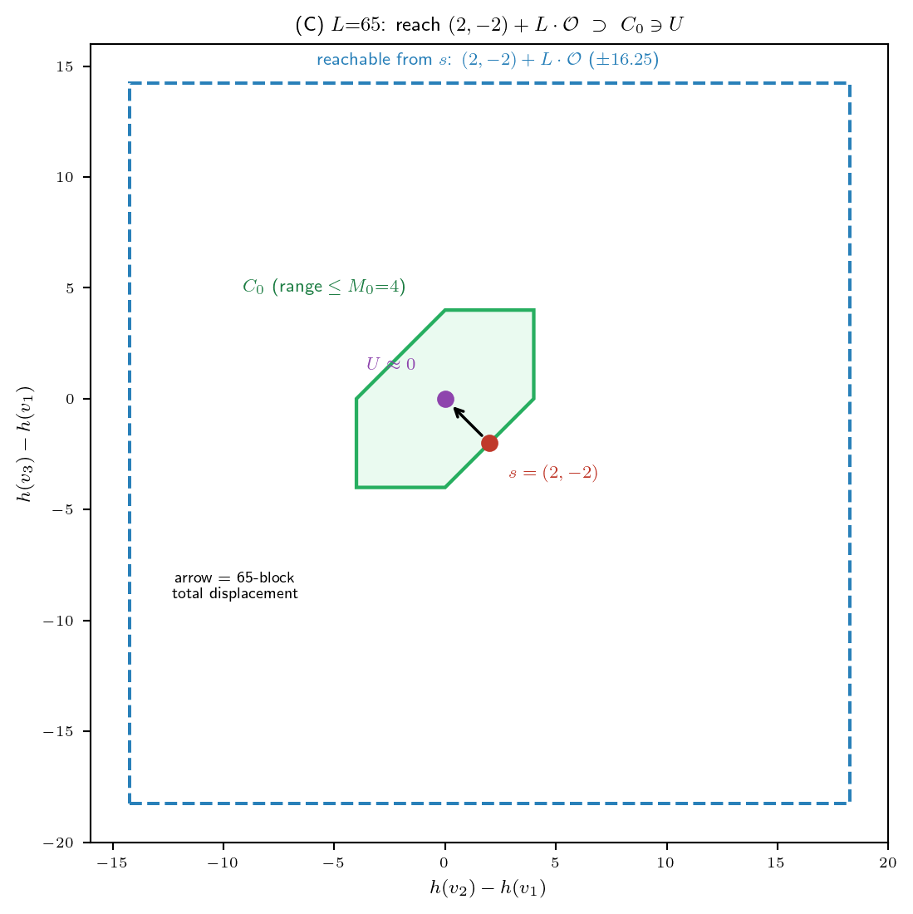
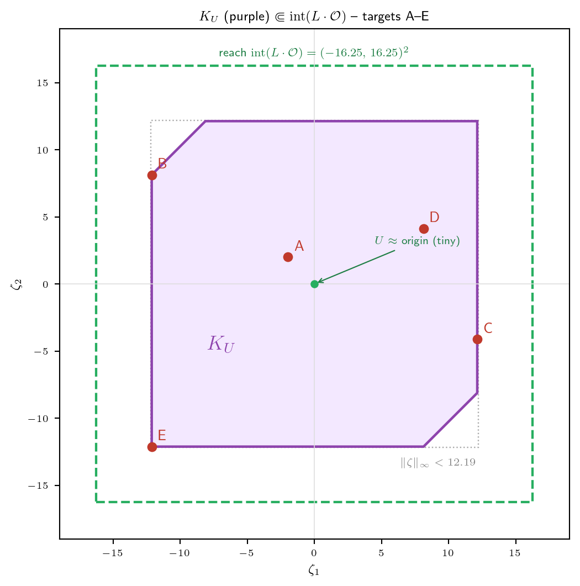

연구 ▷ HST ▷ §5.2 petite small set을 K3 예제로 다시 읽기
한 줄: §5.2는 “sublevel set \(C_0\)가 small set이다(가정 H2)”를 증명하는 절이다. 추상 기호가 많아 길을 잃기 쉬우니, 완전그래프 \(K_3\) 위의 구체 예제 하나를 Setup부터 마지막 상수 \(\eta\)까지 끝까지 끌고 가며 읽는다.
0. 예제 고정
이 글 전체를 관통하는 예제를 못박는다.
- 그래프: 완전그래프 \(K_3\) — 노드 \(\{v_1, v_2, v_3\}\), 세 변 모두 연결.
- deposit 스케일: \(b = 1\) (한 번에 쌓이는 눈의 양 \(\sim \mathrm{Unif}(0,1)\)).
- 시작 높이: \(h(v_1) = 5,\quad h(v_2) = 7,\quad h(v_3) = 3.\)
여기서 상태(state)부터 구체화하자. 스켈레톤 상태공간은 \(\bar{\mathcal{X}} = \mathbb{R}^{n-1} \times V\) (\(n = 3\)이라 \(\mathbb{R}^2 \times V\)). 두 좌표는:
(1) 높이차 \(\Delta_1\mathbf{h}\) — \(v_1\)을 기준으로 뺀 anchored 높이차: \[\Delta_1\mathbf{h}(s) = \bigl(h(v_2) - h(v_1),\ h(v_3) - h(v_1)\bigr) = (7-5,\ 3-5) = (2, -2).\]
(2) 현재 노드 \(X\) — walker가 지금 있는 노드 (예: \(v_1\)).
→ 우리 예제의 상태는 \(s = \bigl((2,-2),\ v_1\bigr)\)이다. (\(\Delta_1\mathbf{h}\)가 절대높이 \(5,7,3\)을 안 기억해도 되는 이유: 눈은 모든 노드에 똑같이 와 닿는 게 아니라 높이차만 동역학에 들어오기 때문. 높이를 통째로 \(+10\) 해도 같은 상태.)
1. 무엇을 증명하려는가 — \(C_0\)가 small set (\(H2\))
ergodic 정리(Meyn–Tweedie)를 쓰려면 가정 셋이 필요한데, 그중 H2 = “어떤 small set이 존재한다”를 이 절에서 댄다. small set의 정의는:
집합 \(C\)가 small이다 \(\iff\) 어떤 스텝 수 \(m\)과 0이 아닌 측도 \(\nu\)가 있어, \(C\) 안 어디서 출발하든 \(m\)스텝 뒤 분포가 공통 바닥 \(\nu\)를 깐다: \[P^m(s, \cdot) \geq \nu(\cdot) \qquad (\forall\, s \in C).\]
먼저 \(s\)가 어디의 원소인지 못박자. 라운드 스켈레톤의 상태공간은 \[\bar{\mathcal{X}} \;=\; \mathbb{R}^{n-1} \times V \;=\; \mathbb{R}^2 \times \{v_1, v_2, v_3\},\] 즉 상태는 \(s = (\Delta_1\mathbf{h},\ X)\) — (높이차 벡터, 현재 노드) 쌍이다. 우리 예제에선 \[s = \bigl((2,-2),\ v_1\bigr) \in \bar{\mathcal{X}}.\]
후보 small set은 높이차 범위가 \(M_0\) 이하인 상태들. 좌표 약자로 \(u_1 := h(v_2)-h(v_1)\), \(u_2 := h(v_3)-h(v_1)\) (\(\Delta_1\mathbf{h}=(u_1,u_2)\))라 두면, 범위 \(M(s)\)는 anchored 높이 \(\{0, u_1, u_2\}\)의 최대−최소 = 최대 pairwise 거리: \[M(s) = \max\bigl(|u_1|,\ |u_2|,\ |u_1 - u_2|\bigr).\] 따라서 closed form으로 (\(M\)은 \(\Delta_1\mathbf{h}\) 좌표에만 의존, 노드 \(X\)는 자유): \[C_0 = \bigl\{\, (u_1,u_2) : |u_1| \leq M_0,\ |u_2| \leq M_0,\ |u_1 - u_2| \leq M_0 \,\bigr\} \times V\] — 세 띠의 교집합인 육각형 \(\times V\). 이 예제 \(M_0 := 4\). 우리 \(s=(2,-2)\): \((|u_1|, |u_2|, |u_1-u_2|) = (2, 2, 4)\) 모두 \(\leq 4\) → \(s \in C_0\) (마지막이 \(=4\)라 육각형 경계 위).

이 육각형이 \(C_0\)(\(\times\) 노드 \(V\)) — 세 높이차 \(h(v_2)-h(v_1)\), \(h(v_3)-h(v_1)\), \(|u_1-u_2|\)가 모두 \(M_0=4\) 이하인 상태들이며, 출발 \(s=(2,-2)\)는 \(|u_1-u_2|=4\) 변(=\(C_0\)의 경계, 가장 불균형한 worst case)에 놓인다.
2. 겨냥 영역 — 밀도 영역(\(\mathcal{O}\), \(L\cdot\mathcal{O}\))과 chamber(\(U\))
falls가 쓰는 영역을 두 종류로 나눠 잡는다 (전부 \(\Delta_1\mathbf{h}\)가 사는 \(\mathbb{R}^2\)의 부분집합이지만 역할이 다르다):
- (가) 증분/도달 영역 \(\mathcal{O}\), \(L\cdot\mathcal{O}\) — “한 블록/\(L\)블록이 \(\Delta_1\mathbf{h}\)를 얼마나 미는가” (현재 위치 \(p\)에 \(p+\mathcal{O}\)로 더해지는 변위). 아래 ①②.
- (나) chamber \(\mathcal{O}^\dagger\), \(U\) — “궤적이 어디서 끝나는가” (원점 근처 최종 위치). 아래 ③④.
두 종류가 같은 \(\mathbb{R}^2\)에 살아 박스 크기로 “\(\mathcal{O}\supset\mathcal{O}^\dagger\)”처럼 보이지만, 변위(가) vs 위치(나)라 한 줄로 묶어 읽으면 안 된다 (이 혼동은 ③에서 다시 짚는다). \(b=1\), \(n=3\).
① \(\mathcal{O}\) — 한 블록 증분의 밀도가 양수 하한을 갖는 영역. \[\mathcal{O} := \{\,\|\mathbf{y}\|_\infty < b/4\,\} = (-\tfrac14, \tfrac14)^2.\]
용어 정의 (“밀도 하한”). 한 블록 증분 \(Y_1 = (b^{\sharp}_2 - b^{\sharp}_1,\ b^{\sharp}_3 - b^{\sharp}_1)\) (\(b^{\sharp}_i \sim \mathrm{Unif}(0,b)\) 독립)의 확률밀도를 \(f\)라 하자. pushforward 보조정리가 \[f(y) \;\geq\; \frac{b^{1-n}}{2} = \frac12 \qquad (\forall\, y \in \mathcal{O})\] 를 보장한다. 동치로, 임의의 가측 \(B \subseteq \mathcal{O}\)에 대해 \(\mathbb{P}(Y_1 \in B) \geq \tfrac12\,|B|_{\mathrm{Leb}}\). 이 “밀도 \(f\)가 \(\mathcal{O}\) 위에서 양수 상수 \(\tfrac12\) 이상”이 앞으로 쓸 밀도 하한(floor)의 정확한 뜻이다 (양수란 게 핵심; 어디서도 \(0\)으로 안 꺼짐).
핵심은 \(\mathcal{O}\)가 위치가 아니라 “한 블록이 만드는 \(\Delta_1\mathbf{h}\)의 증분(이동량)”의 영역이라는 점이다. 우리 예제로 “\(\Delta_1\mathbf{h}(s)=(2,-2)\)가 한 블록 뒤 어떻게 바뀌나”를 직접 따라가자.
한 블록 = 각 노드에 fall 하나씩 (\(K_3\)이라 \(v_1, v_2, v_3\)에 각각 \(b^{\sharp}_1, b^{\sharp}_2, b^{\sharp}_3 \sim \mathrm{Unif}(0,1)\)). 그러면 높이가 \(h(v_i) \mapsto h(v_i) + b^{\sharp}_i\)로 오르고: \[ \begin{aligned} \Delta_1\mathbf{h}_{\text{new}} &= \bigl(\,(h(v_2){+}b^{\sharp}_2) - (h(v_1){+}b^{\sharp}_1),\ \ (h(v_3){+}b^{\sharp}_3) - (h(v_1){+}b^{\sharp}_1)\,\bigr)\\ &= \underbrace{\bigl(h(v_2){-}h(v_1),\ h(v_3){-}h(v_1)\bigr)}_{=\,(2,-2)} \;+\; \underbrace{\bigl(b^{\sharp}_2 - b^{\sharp}_1,\ b^{\sharp}_3 - b^{\sharp}_1\bigr)}_{=:\ \text{증분 }\widetilde{\mathbf{b}}^{\sharp}}. \end{aligned} \]
즉 한 블록의 증분은 \(\widetilde{\mathbf{b}}^{\sharp} = (b^{\sharp}_2 - b^{\sharp}_1,\ b^{\sharp}_3 - b^{\sharp}_1)\). \(v_1\)에 쌓인 \(b^{\sharp}_1\)이 모든 차이에서 상쇄돼, 절대 적립량은 안 남고 노드 간 상대 차이만 \(\Delta_1\mathbf{h}\)를 옮긴다. (그래서 pushforward 보조정리가 다루는 양이 deposit 자체가 아니라 차이벡터 \(\widetilde{\mathbf{b}}^{\sharp}\)인 것.)
수치 예시 (\((2,-2)\)에서 출발):
- \(b^{\sharp} = (0.5,\ 0.6,\ 0.4)\) → 증분 \((0.6{-}0.5,\ 0.4{-}0.5) = (0.1, -0.1)\) → \((2.1, -2.1)\). 두 성분 다 \(|\cdot| < \tfrac14\) 라 \(\mathcal{O}\) 안 — 밀도 \(\geq \tfrac12\) 보장.
- \(b^{\sharp} = (0.7,\ 0.55,\ 0.85)\) → 증분 \((-0.15,\ 0.15)\) → \((1.85, -1.85)\). 역시 \(\mathcal{O}\) 안.
- \(b^{\sharp} = (0.5,\ 0.9,\ 0.3)\) → 증분 \((0.4,\ -0.2)\). 첫 성분 \(0.4 > \tfrac14\) 라 \(\mathcal{O}\) 밖 — 가능은 하지만 밀도 보장 안 됨.
위 밀도 하한의 유도 (왜 \(\mathcal{O}\) 위에서만 \(f \geq \tfrac12\)인가): 증분 밀도 \(f\)는 \(b^{\sharp}_1\)을 적분해 없앤 것인데, 모든 \(|b^{\sharp}_i - b^{\sharp}_1| < b/4\)일 때 적분 구간이 길이 \(\geq b/2\)를 품어 \(f \geq b^{1-n}/2\)로 떨어진다 (\(b{=}1, n{=}3\)이라 \(\tfrac12\)). 그 조건이 정확히 \(\widetilde{\mathbf{b}}^{\sharp} \in \mathcal{O}\).
주의 — \(\mathcal{O}\)는 “한 블록으로 갈 수 있는 전부”가 아니다. 증분 \(\widetilde{\mathbf{b}}^{\sharp} = (b^{\sharp}_2 - b^{\sharp}_1,\ b^{\sharp}_3 - b^{\sharp}_1)\)은 각 \(b^{\sharp}_i \in [0,b]\)라, 실제 도달 영역은 박스가 아니라 육각형 \[\{\, (x,y) : |x| \leq b,\ |y| \leq b,\ |x - y| \leq b \,\}\] 이다 (증분도 높이차 벡터라 range \(\leq b=1\) — \(C_0\)와 똑같은 모양!). 예컨대 모서리 \((b, -b)\)는 \(b^{\sharp}_1\)을 공유하는 제약 때문에 도달 불가(\(|x-y|=2b > b\)). 박스 \(\mathcal{O}\)(한 좌표 \(\pm b/4\))는 그 육각형 안쪽의 밀도 \(\geq \tfrac12\) 보장 부분일 뿐이다. 증명이 박스만 쓰는 이유: 깔끔한 밀도 하한 \(b^{1-n}/2\)가 거기서만 나오기 때문 (육각형 안·박스 밖은 밀도가 양수지만 그 하한은 안 나옴). 아래 그림은 (A) 큰 \(C_0\) 안에 한 블록 도달역(작은 육각형)이 작게 들어있는 모습 — 둘 다 “range ≤ 상수” 꼴이라 닮았지만 \(C_0\)는 원점 중심·크기 \(M_0{=}4\), 도달역은 \(s{=}(2,-2)\) 중심·크기 \(b{=}1\)로 별개 — 과 (B) 그 도달역 줌인(도달 육각형 \(\supset\) 밀도박스 \(\mathcal{O}\))을 보여준다.

한 블록은 \(\Delta_1\mathbf{h}\)를 육각형(range \(\leq b\))만큼 밀 수 있고, 그중 밀도 하한 \(f \geq \tfrac12\)을 갖는 부분이 박스 \(\mathcal{O}\)(한 좌표 \(\pm\tfrac14\))다. (\(L\)블록 누적 버전은 ② 참조.)
② \(L\cdot\mathcal{O}\) — \(L\)블록이 도달하는 영역 (Minkowski 합). \[L := \Bigl\lceil \tfrac{16M_0}{b} + 1 \Bigr\rceil.\] \(M_0 = 4\), \(b = 1\)이라 \(L = \lceil 16\cdot 4 + 1 \rceil = 65\). 그러면 \(L\cdot\mathcal{O} = (-\tfrac{L}{4}, \tfrac{L}{4})^2 = (-16.25, 16.25)^2\) — 출발 \(\Delta_1\mathbf{h}(s)=(2,-2)\)를 원점 근처로 끌어내릴 만큼 넉넉하다. (falls가 채울 변위 \(y = u - \Delta_1\mathbf{h}(s) - \mathbf{r} \approx (0,0)-(2,-2) = (-2,2)\)가 \(\pm 16\) 안에 푹 들어옴.)

한 블록은 \(\mathcal{O}\)(\(\pm\tfrac14\))짜리 작은 걸음이지만, \(L=65\)번 누적하면 도달 영역이 \(\pm 16.25\)까지 커져 — 출발 \(s=(2,-2)\)에서 목표 \(U(\approx 0)\)가 그 안에 푹 들어온다 (위 그림).
밀도 하한의 L블록 버전 (정의). \(L\)블록 총 증분 \(Y = \sum_{k=1}^{L} Y_k\) (독립 합)의 밀도는 \(L\)겹 합성곱 \(f^{*L}\)이고, \(\operatorname{int}(L\cdot\mathcal{O})\)의 임의의 컴팩트 부분집합 \(K\)에 대해 양수 상수 \(c_K\)가 존재해 \[f^{*L}(z) \;\geq\; c_K \;>\; 0 \quad (z \in K), \qquad\text{즉}\qquad \mathbb{P}(Y \in B) \;\geq\; c_K\,|B|_{\mathrm{Leb}}\ \ (B \subseteq K).\] 주의 세 가지: (i) \(c_K\)는 한 블록의 \(\tfrac12\)이 아니다 (합성곱은 곱이 아니라 적분이라 \((\tfrac12)^L\)과 다름). (ii) floor는 \(L\cdot\mathcal{O}\) 전체가 아니라 경계에서 떨어진 컴팩트 \(K\) 위에서만 — \(f^{*L}\)은 \(L\cdot\mathcal{O}\) 경계로 갈수록 \(0\)으로 떨어진다. (iii) \(c_K\)의 크기 — 사실 \((\tfrac12)^L\)보다 훨씬 크다. Lemma 13이 증명하는 하한 \(c_K \geq (\tfrac{b^{1-n}}{2})^{L}(\omega_d s^d)^{L-1}\) 은 “\(c_K>0\)”만 보이려는 매우 loose한 과소평가(지수적으로 작은 값)일 뿐, 실제 \(c_K\)는 이보다 한참 크다. 합 \(Y\)의 분포는 평균 \(0\) 주위로 표준편차 \(\sqrt{L/6}\approx 3.3\) 퍼지고(CLT), 타깃(\(|y|\lesssim 12\))은 그 bulk에 있어 밀도가 \(f^{*L} \sim L^{-d/2}\) — 즉 다항적으로만 작다 (\(\sim 1/L\)). 정리하면 \((\tfrac12)^L\)(loose 하한) \(\ll\) 실제 \(c_K \sim L^{-d/2}\). 증명엔 \(c_K>0\)만 필요해 loose bound로 충분할 뿐.
③ \(\mathcal{O}^\dagger\) — chamber \(U\)를 앉히는 안쪽 박스 (위치 영역). \[\mathcal{O}^\dagger := \{\,\|\mathbf{y}\|_\infty < b/16\,\} = (-\tfrac{1}{16}, \tfrac{1}{16})^2.\] 여기서 한 번 짚고 가자: \(\mathcal{O}^\dagger\)는 ① \(\mathcal{O}\)와 같은 “증분 영역”이 아니다. falls가 “\(\mathcal{O}^\dagger\)만큼 민다”는 뜻이 전혀 아니고 (falls는 여전히 \(\mathcal{O}\)/\(L\cdot\mathcal{O}\) 전체를 쓴다), \(\mathcal{O}^\dagger\)는 최종 위치 chamber \(U\)(④)가 들어앉을 박스다. 그 역할은 하나 — \(U\)를 도달역 안쪽에 충분히 작게 가두는 것:
\(U \Subset \mathcal{O}^\dagger\)이면 목표 집합 \(K_U^\varrho = \{u - \Delta_1\mathbf{h}(s) - r\}\)가 도달역 내부에 컴팩트하게 든다: \(K_U^\varrho \Subset \operatorname{int}(L\cdot\mathcal{O})\).
(또 다른 \(U\) 조건인 등호 초평면 회피는 \(\mathcal{O}^\dagger\) 크기와 무관하므로 ④에서 다룬다.)
왜 “\(U \Subset \mathcal{O}^\dagger \Rightarrow K_U^\varrho \Subset \operatorname{int}(L\cdot\mathcal{O})\)”인가. 목표 집합의 한 점은 세 조각의 합이다: \[y \;=\; \underbrace{u}_{\in\, U \subset \mathcal{O}^\dagger} \;-\; \underbrace{\Delta_1\mathbf{h}(s)}_{s\,\in\, C_0} \;-\; \underbrace{r}_{\text{잔차}}.\] 각 조각의 크기는: \(\|u\|_\infty < \tfrac{b}{16}\) (\(\mathcal{O}^\dagger\)), \(\|\Delta_1\mathbf{h}(s)\|_\infty \leq M_0\) (range \(\leq M_0\)), \(\|r\|_\infty \leq \tfrac{Lb}{8}\) (잔차 예산). 삼각부등식으로 \[\|y\|_\infty \;\leq\; \|u\|_\infty + \|\Delta_1\mathbf{h}(s)\|_\infty + \|r\|_\infty \;<\; \frac{b}{16} + M_0 + \frac{Lb}{8}.\] 이게 \(\operatorname{int}(L\cdot\mathcal{O}) = \{\|\cdot\|_\infty < \tfrac{Lb}{4}\}\) 안에 들려면 \(< \tfrac{Lb}{4}\)여야 하는데, \(L = \lceil 16M_0/b + 1\rceil\)이라 \(\tfrac{Lb}{8} \geq 2M_0 + \tfrac{b}{8}\)이고 남는 margin이 \[\frac{Lb}{4} - \Bigl(\frac{b}{16} + M_0 + \frac{Lb}{8}\Bigr) = \frac{Lb}{8} - \frac{b}{16} - M_0 \;\geq\; \bigl(2M_0 + \tfrac{b}{8}\bigr) - \tfrac{b}{16} - M_0 = M_0 + \frac{b}{16} \;>\; 0.\] 양의 margin이 남으니 \(K_U^\varrho\)가 경계에서 떨어진 채(컴팩트하게) \(\operatorname{int}(L\cdot\mathcal{O})\) 안에 든다.
K3 수치로 확인 (\(M_0 = 4\), \(b = 1\), \(L = 65\)): \[\|u\|_\infty < \tfrac{1}{16} = 0.0625, \quad \|\Delta_1\mathbf{h}(s)\|_\infty \leq 4, \quad \|r\|_\infty \leq \tfrac{65}{8} = 8.125\] \[\Rightarrow \|y\|_\infty < 0.0625 + 4 + 8.125 = 12.19 \;<\; \tfrac{Lb}{4} = 16.25,\] margin \(= 16.25 - 12.19 = 4.06\,(= M_0 + \tfrac{b}{16})\). 즉 목표 전체가 도달역 \(\operatorname{int}(L\cdot\mathcal{O})\) 안에 여유 \(\sim 4\) 두고 들어간다. (참고: \(\mathcal{O}^\dagger\)의 \(\tfrac{b}{16}\)은 이 부등식을 넉넉히 충족하는 충분조건일 뿐 — \(\|u\|_\infty\)는 사실 \(M_0 + \tfrac{b}{8}\)까지 허용되니 \(\mathcal{O}^\dagger\)는 과하게 조인 값이다 — 아래 ④의 Remark에서 자세히.)

- \(\mathcal{O}^\dagger\)(보라, \(\pm0.0625\))는 원점 근처 박스이고 등호면 셋이 원점을 관통한다 — chamber \(U\)(초록)가 그 안에 작게 앉는다. (B) 더 줌인하면 \(U\)가 등호면들에서 \(\kappa_U\) 떨어져 있다. 이 그림은 도착(chamber) 공간이라 원점 기준이다 (한 블록 reach의 \(\mathcal{O}\)는 §2①의 \(s\)-기준 그림 참조).
④ \(U\) — 실제 목표 chamber. \(\mathcal{O}^\dagger\) 안의 작은 \(\ell^\infty\)-공인데, final-equality 초평면을 피해서 잡는다. anchored 전체높이 \(\widetilde{u} = (0, u_1, u_2)\) (여기 \(u=(u_1,u_2)\in U\))의 세 등호면 \[\{u_1 = 0\},\quad \{u_2 = 0\},\quad \{u_1 = u_2\}\] 위에선 fall이 목표를 robust하게 못 맞힌다 (퇴화 비교). 그래서 이 셋에서 떨어진 곳에 중심을 둔다: \[\text{중심} = \tfrac{b}{128n}(1, 2) = \bigl(\tfrac{1}{384}, \tfrac{1}{192}\bigr) \approx (0.0026,\ 0.0052), \qquad \text{반경 } r_U = \tfrac{1}{1536}.\] 이 \(U\)는 세 초평면에서 최소 \(\kappa_U = \tfrac{1}{768} \approx 0.0013\) 떨어져 있다 (\((\ast)\) 조건). 최종 기준측도가 바로 이 \(U\) 위의 균등측도: \(\nu = \mathrm{Unif}(U)\otimes\delta_{v_3}\).
Remark — \(U\)가 원점일 이유는 없다 (원점은 편의·안전 선택). \(U\)를 원점 근처 \(\mathcal{O}^\dagger\)에 둔 게 필연처럼 보이지만, 실제로 \(U\)에 걸리는 제약은 둘뿐이고 둘 다 “\(U=\) 원점”을 요구하지 않는다.
- 모든 \(s\in C_0\)에서 도달 + density floor. \(U\)는 \(C_0\) 안 어느 출발점에서도 밀도를 깔며 닿아야 하므로 (도달역 \(\approx s + L\cdot\mathcal{O}\)), \[U \subset \bigcap_{s\in C_0}\bigl(s + L\cdot\mathcal{O}\bigr).\] \(C_0\)가 원점 대칭이라 이 교집합은 원점 중심이지만 반경이 \(\sim 3M_0\)로 크다 — \(U\)는 그 큰 영역 어디든 가능하지 원점에 붙을 필요가 없다.
- 등호 초평면 회피 (\(\kappa_U\)). ties \(\{\widetilde{u}_i=\widetilde{u}_j\}\)만 피하면 된다.
어느 제약도 “\(U=\) 원점”을 강제하지 않는다. 그럼 왜 논문은 원점 근처에 두나?
- 원점 \(=\) 대칭 중심 \(=\) 최대 여유점. \(\bigcap_{s}(s+L\cdot\mathcal{O})\)가 원점 중심이라 원점 근처가 도달역 경계에서 가장 멀다 — “아무 데나 둬도 되지만 가장 안전한 데” 둔 것.
- \(\mathcal{O}^\dagger\)(\(b/16\))은 필요보다 빡빡하다. containment \(K_U^\varrho \Subset \operatorname{int}(L\cdot\mathcal{O})\)만 따지면 \(\|u\|_\infty \lesssim M_0 + b/8\)까지 허용된다 (\(b/16\)보다 훨씬 큼). \(\mathcal{O}^\dagger\)로 좁힌 건 안전하게 과하게 조인 definite choice지 필요조건이 아니다.
- 위치에 의미 있는 단 하나: chamber 중심 \(\tfrac{b}{128n}(1,2,\ldots,n-1)\)은 높이가 살짝 증가(\(v_n\) 최고)하게 잡혔다 — 끝노드 \(v_n\) pinning(\(\delta_{v_n}\)) 때문. 즉 “원점 자체”가 아니라 “원점에서 \(v_n\) 쪽으로 미세하게 기운 작은 공”이고, 이건 pinning용이지 원점이라서가 아니다.
요컨대 \(U\)의 위치는 “\(\bigcap_{s\in C_0}(s+L\cdot\mathcal{O})\) (원점 중심 큰 영역) 안 \(+\) ties 밖”이면 자유다. 원점 근처에 둔 건 대칭 중심의 최대-여유 편의 선택(\(+\,v_n\) pinning용 미세 기울기)이지 필연이 아니다.
3. 목표 부등식 — 무엇을 향해 가나
이 절이 최종적으로 보일 부등식은, 라운드 스켈레톤 커널 \(\bar{P}\)에 대해: \[\bar{P}^{\,nL}(s, \cdot) \;\geq\; \eta\,\nu \qquad (\forall\, s \in C_0),\] 즉 \(C_0\) 안 모든 \(s\)에서 \(nL\)라운드 뒤 분포에 공통 바닥 \(\eta\,\nu\)가 깔린다. 여기서 기준측도는 \[\nu = \mathrm{Unif}(U) \otimes \delta_{v_3},\] “높이차는 작은 영역 \(U\)를 균등하게 덮고, walker는 \(v_3\)(=\(v_n\))에 못박힌다”는 측도다. (왜 마지막 노드 \(v_3\)에 못박나, 왜 점 측도 \(\mathrm{Unif}(\mathcal{O}^\dagger)\)가 아니라 chamber \(U\)인가 — 다음 단계에서 예제로 본다.)
구체적으로는, 모든 \(B \subseteq U\)에 대해 \[\bar{P}^{\,nL}\bigl(s,\, B \times \{v_3\}\bigr) \;\geq\; \eta\,\frac{|B|_{\mathrm{Leb}}}{|U|_{\mathrm{Leb}}}.\]
이 \(\eta > 0\)을 (i)~(v) 다섯 조각의 곱으로 만들어내는 게 §5.2의 본체다.
4. robust fibre — fall 적립의 “안전한 알짜” ((iii)의 핵심)
(다섯 조각 중 (iii)을 미리 본다. (i) cyclic fall·(ii) non-fall 잔차는 다음 글에서. 앞 §2~3의 “tie 회피”·“transport”가 여기서 한 정의로 모인다.)
0. 무대
\(K_3\)에서 falls는 \(nL = 3\times 65 = 195\)개, 각 fall이 적립 \(b^{\sharp}_j \in [0,1]\). 그래서 fall 적립 조합은 195차원 큐브의 한 점: \[\mathbf{b}^{\sharp} = (b^{\sharp}_1, \ldots, b^{\sharp}_{195}) \in [0,1]^{195}.\] fall 사상 \(\Sigma: [0,1]^{195} \to \mathbb{R}^2\) 가 이 적립을 높이차 변위로 보낸다 (\(d = n-1 = 2\)).
1. 맨 fibre — “목표 맞히는 적립 조합 전부”
목표 변위 \(y\)를 맞히는 적립 조합의 집합: \[\text{fibre} = \{\mathbf{b}^{\sharp} \in [0,1]^{195} : \Sigma\mathbf{b}^{\sharp} = y\}.\] 입력 195개에 제약 2개(\(\mathbb{R}^2\) 방정식)라 자유도 \(195-2 = 193\)차원 — \(y\)를 맞히는 방법이 193차원만큼 많다. 부피는 \(\mathcal{H}^{193}\)(193차원 Hausdorff 측도)로 재고, Lemma 13(conv-lower)+coarea가 \(\mathcal{H}^{193}(\text{fibre}) \geq m_0 > 0\)을 준다 (§2②의 floor가 여기로).
2. 왜 맨 fibre로는 부족 — 두 교란을 견뎌야
이 fibre를 그냥 못 쓰는 이유: 나중에 두 가지가 적립을 건드린다.
- (교란 A) transport (iv): non-fall 잔차 \(R\)을 흡수하려고 적립을 \(\mathbf{b}^{\sharp} \mapsto \mathbf{b}^{\sharp} - QR\)로 \(\leq \delta/4\)만큼 평행이동.
- (교란 B) branch 안정성: 적립이 어느 branch인지가 높이 비교로 정해지는데, 교란이 그 부호를 뒤집으면 안 됨 (§2③·④의 tie 문제).
그래서 fibre에서 위험한 부분을 도려낸 안전한 알짜 = robust fibre.
3. 도려내는 두 종류 (robust 조건 ②③)
② cube 가장자리 튜브 제거 — \(\delta \leq b^{\sharp}_j \leq b-\delta\). 어떤 적립이 \(0\)이나 \(b\)(큐브 면)에 붙어 있으면 transport가 \(\delta/4\) 밀 때 \([0,b]\) 밖으로 튕겨 음수나 \(>b\)가 된다 → 무효. 그래서 각 좌표를 가장자리에서 \(\delta\) 떨어뜨린다 (큐브를 안쪽 \([\delta, b-\delta]^{195}\)로 줄여 fibre와 교집합).
③ tie 초평면 튜브 제거 — \(|g_a(\mathbf{b}^{\sharp})| \geq \delta\). branch는 높이 비교 \(g_a\)로 정해지고 \(g_a = 0\)이 tie 초평면이다. \(g_a \approx 0\) 근처에선 \(\delta/4\) 교란이 부호를 뒤집어 다른 branch로 샌다. 그래서 모든 비교를 tie에서 \(\delta\) 떨어뜨린다 (각 tie 초평면 둘레 폭-\(\delta\) 튜브를 제거).
4. robust fibre = 안전한 알짜
세 조건을 다 만족하는 적립 조합: \[\mathcal{R}_\delta(y,s) = [0,b]^{195} \cap \underbrace{\Sigma^{-1}(y)}_{①\ \text{목표 맞힘}} \cap \underbrace{\{\delta \leq b^{\sharp}_j \leq b-\delta\}}_{②\ \text{가장자리 회피}} \cap \underbrace{\bigcap_a\{|g_a| \geq \delta\}}_{③\ \text{tie 회피 = 같은 branch}}.\]
5. 도려내도 부피가 남는다 (floor 생존)
튜브를 빼면 부피가 \(0\) 되지 않나? — \(\delta\)를 충분히 작게 잡아 막는다.
- 맨 fibre 부피 \(\mathcal{H}^{193} \geq m_0\).
- 제거하는 각 튜브(가장자리·tie)의 fibre 측도 \(\leq C\delta\) (tube-bound 보조정리, \(\delta\)에 비례).
- \(\delta\)를 작게 해 잘리는 총량 \(\leq m_0/2\)로 누르면: \[\mathcal{H}^{193}(\mathcal{R}_\delta) \geq m_0 - \tfrac{m_0}{2} = m_* := \tfrac{m_0}{2} > 0.\]
→ robust fibre도 양의 부피 \(m_*\) 유지.
6. 그래서 robust fibre가 하는 일
\(\mathcal{R}_\delta\) 위에서는: - ②덕에 transport \(\mathbf{b}^{\sharp} - QR\) 후에도 적립이 \([0,b]^{195}\) 안. - ③덕에 같은 branch·같은 끝노드 \(v_3\) 유지 (부호 안 뒤집힘). - transport는 평행이동이라 \(\mathcal{H}^{193}\)을 보존 → 옮긴 robust fibre도 측도 \(\geq m_*\).
이 \(m_*\)가 밀도 floor \(c_* = m_*/(b^{nL} J(\Sigma))\)로, 결국 \(\eta\)의 한 인자가 된다.
한 줄. robust fibre = “목표 \(y\)를 맞히는 195차원 적립조합(fibre, ①) 중 cube 가장자리(②)와 tie 초평면(③) 둘 다에서 \(\delta\) 떨어진 안전한 알짜”. 위험 튜브를 도려내되 \(\delta\)를 작게 잡아 양의 부피 \(m_*\)를 남기고, 그 위에서 transport가 적립 유효성·branch를 견디며 측도를 보존 → 밀도 floor \(c_*\)를 공급한다.
(여기까지: Setup + 목표 + (iii) robust fibre. 다음: 라운드 스켈레톤 \(\bar{P}\)가 \(K_3\) 한 라운드에 뭘 하는지, 그리고 (i) cyclic fall \(\mathcal{A}^{\sharp}\) · (ii) non-fall 잔차 \(\mathcal{A}^{\flat}\) · (iv) transport · (v) 조립을 예제 수치로.)